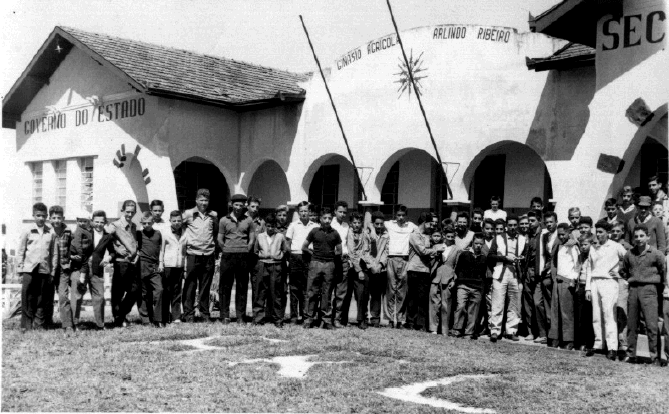
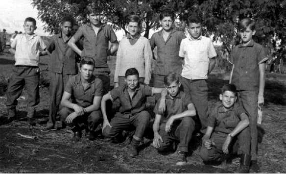
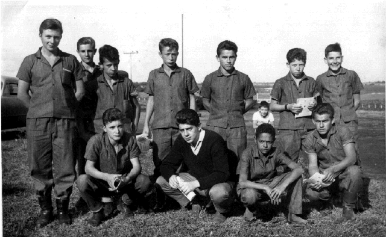
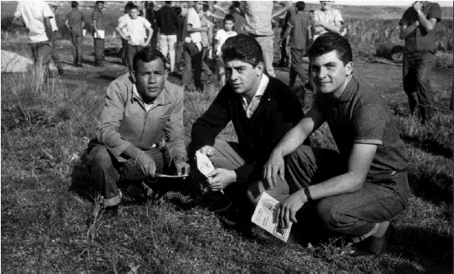
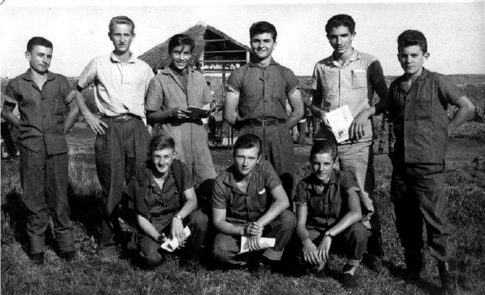

Alunos de 1964

1964

Alunos do então Ginásio Agrícola Arlindo Ribeiro
1965

Agosto de 1966

Glauco Ruppel, Helio Zanona, Sérgio Santiago, Moacir Valenga,
Francisco R. Esteche,
Edoni Pedroso, Acir Druski, Nildo S. Nascimento, João Xarão, César de Castro e Elielton R. Esteche

Renato Romano, João Xarão e Oscar Rupel

Edson Machado, João Rodeski, Walter Rukenbaker, Oscar Ruppel,
Joel Lentch,
Arcênio Morer, Heloy Zanona, Olavo Ruppel e Helio Zanona